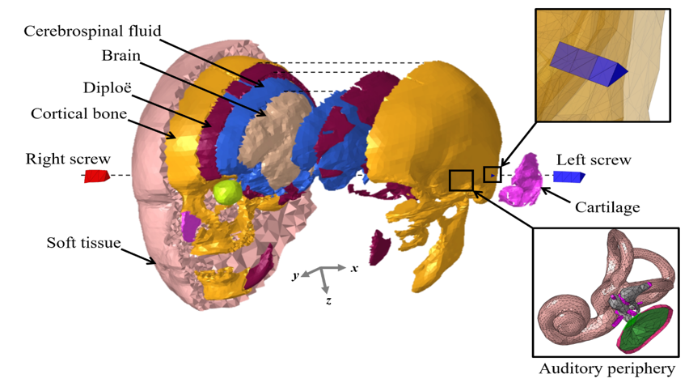
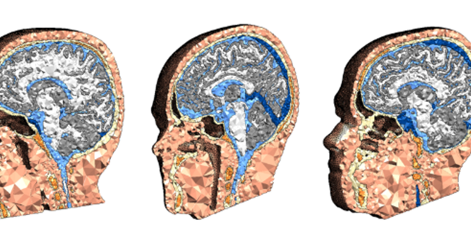
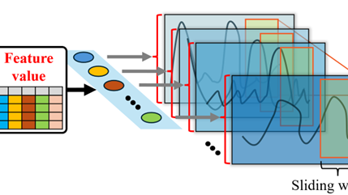
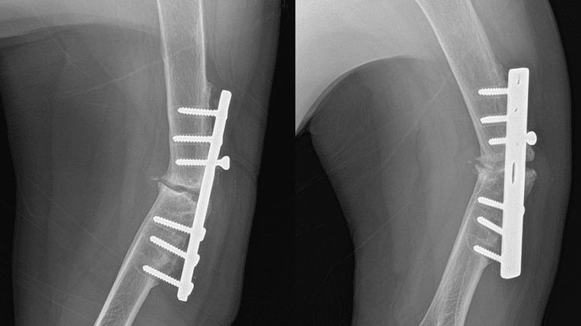
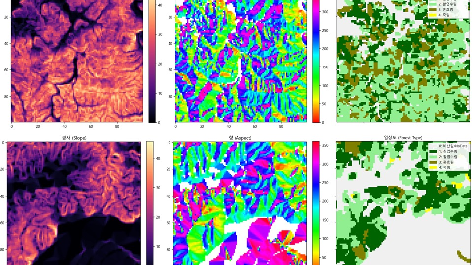

Research
모델링과 시뮬레이션, 실험, 그리고 AI — 다섯 개의 연구 축을 소개합니다.

Hearing through vibration
이론적 연구 기반 — 사람 머리 유한요소 모델을 활용한 골전도 청각 메커니즘 규명

Vibration therapeutics for the brain
알츠하이머 치료를 위한 진동 자극 방법론의 개발과 검증

AI-driven motion prediction & optimization
인공지능을 활용한 엑소수트의 모션 예측과 최적화

Biomechanics of the shoulder
생체역학 실험 장치 설계 및 어깨 질환 관련 시뮬레이션

Data-driven wildfire prediction
산불 특성 데이터 기반 최적화 및 예측